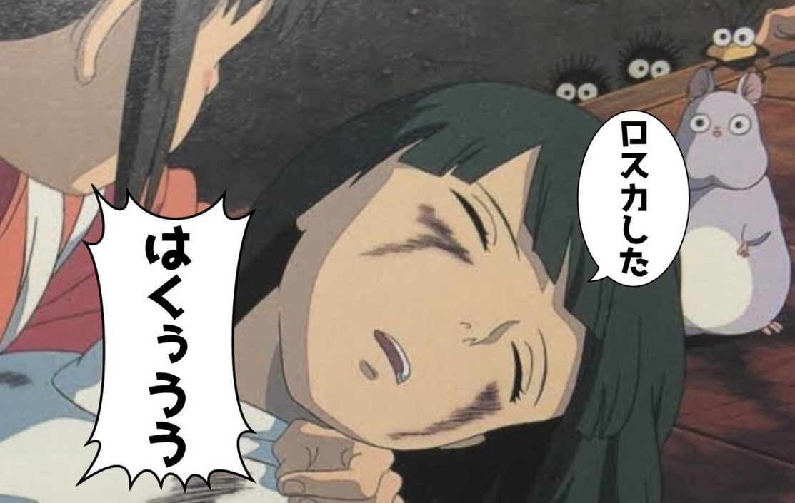
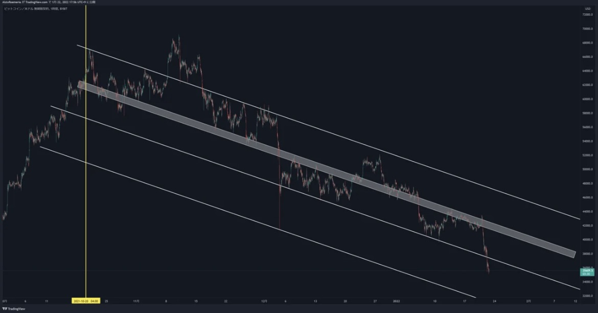
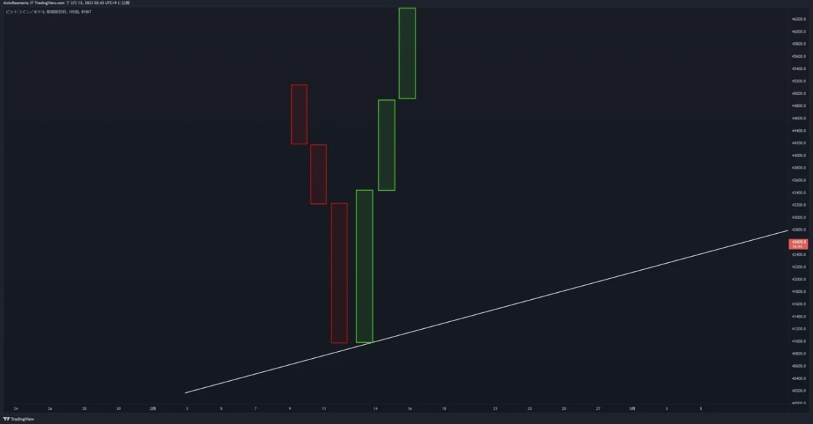
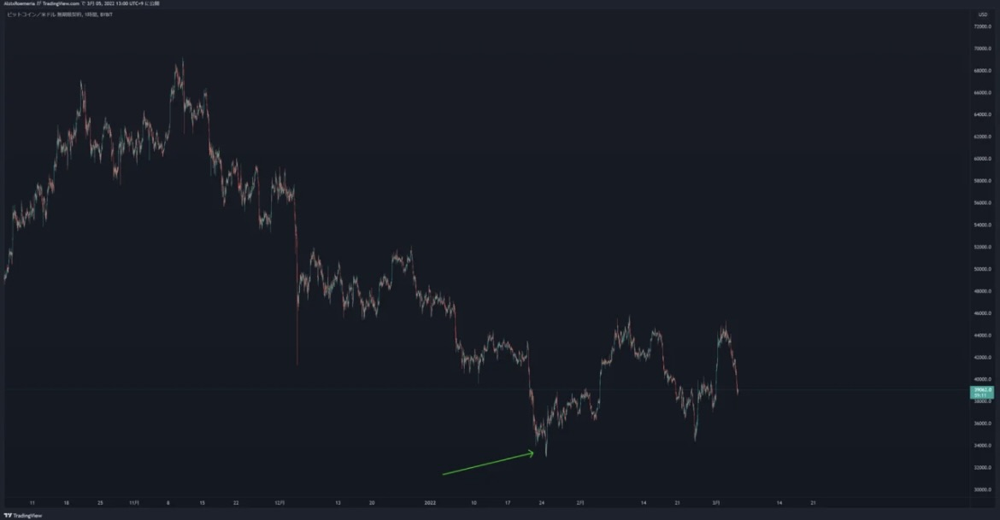
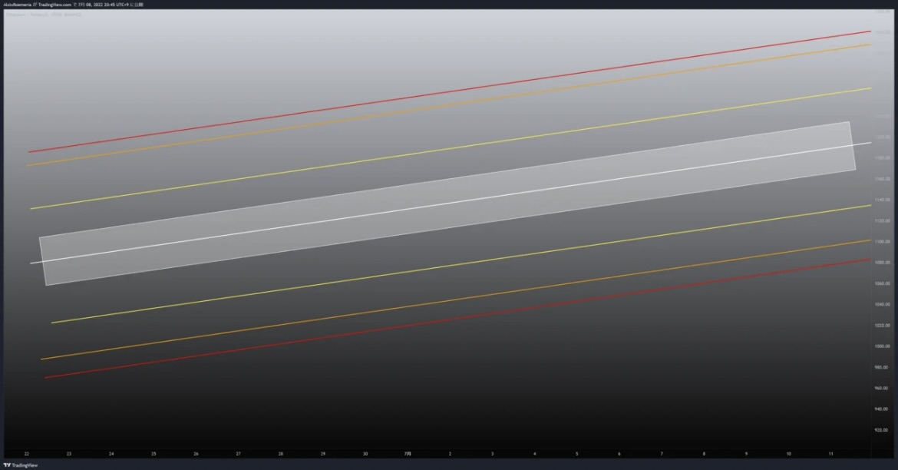
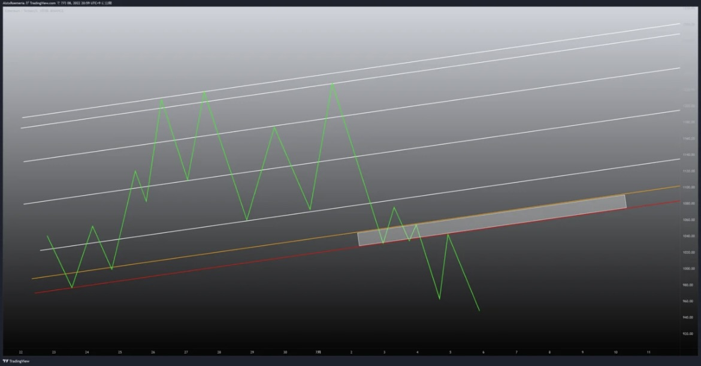

--------------ラインとプライスアクションで環境認識をしてどう立ち回るか-------------

------------------------------------1.ラインの引き方------------------------------------
ラインを引くときに一番意識するのは相場の角度
ビットコインの直近のチャートです、下落の起点になってる青縦線からラインを引いていきます。
黄縦線はラインの起点なんですが後々わかるので今は無視します。
まず教科書的な高値を結ぶラインを引くとこうですよね(下画像は上画像を拡大しています)↓
結構このラインの引き方する人多いんじゃないですかね
じゃあこのラインがどう機能していくか見てみましょう。↓
なんか微妙じゃないですか？別にこの引き方が間違ってるとは言わないです。
実際こういった教科書的な引き方で効くことは多々あります。
ただ自分が引いたラインが効かないって人はチャートを局所的に見過ぎていると思います。
じゃあどうやって見るのかというと↓
まずチャートをブロック毎に見ます
こんな感じでトレンドっていくつかのトレンドの集合体でできてます(当たり前)
そのブロック毎のざっくりの方向感を見ます。↓
思ったより青矢印が見にくくなってしまいました…
一番左だけ方向感掴みづらいですが高値ベースで見ます。矢印を見て気付くことはないですか？
緑矢印の角度が一緒なんですね、ということは...
こういうラインが引けます。
え、上の抜けてる部分は無視でいいのって？思う人もいると思いますがそれはまた後で説明します。
このラインがどう機能するか見ていきましょう。↓

最初に引いたやつより効いてると思います。先程の話に戻りますが、効いてるけど上の突き出た部分は？という話なんですけど皆さん角度のある三尊が出たらこうやって見ますよね？↓
左肩から右肩にかけてのラインとネックライン、上の引き方もこれと同じです。
どうしても気になる人はトップから同じ角度でラインを引いてみてください後々効くことがあります。
では効くラインが引けたところでこのままもう少し先のチャートもブロック毎に見てみます。
こんな感じで先程と同じようにそれぞれの角度を見て同じようにラインを引けば効くラインが引けます。
が！チャートをよく見てみてください。↓
左の大枠の動きと右の動きめちゃくちゃ似てませんか？こういう似た角度・動きをしてる時には左と右の動きを結ぶラインが引けることが多いです。実際に引いてみます。この引き方のいいところは基本ラインって2点目からじゃないと引けないんですが4回目の反発以降は抜けやすいっていうのがあってもし4回目で抜けるなら1回しか反発取れないのですが、軸になるラインを見つけたら他の複製したラインは1点目からでも引ける場所があるので普通の引き方より多く反発を取れます。

真ん中の太いラインはラインとラインの間隔が狭くなるのでゾーン化しました。かなり効いてるのがわかると思います。これを見てロングしたいってなりますか？なるなら引退したほうがいいと思います。
普通に下落トレンドなんですよ、だったらショート狙った方がよくないですか？個人の考えですがトレードの基本は順張りだと思ってます、上位足に順張りして短期足で逆張りが基本かなと。ドテンなんて上級者がやることです、まずは片打ちで確実に勝ちにいくのが最優先です。下の図を見てください。↓
これは単純に3.4.5回目のトレンドラインタッチでロングし、3回目のロングで損切りした場合の取れた値幅と損失を出した値幅の比較です。水色矢印でロング、青水平で利確したとします、3回目は赤水平で損切りになりました、右下に取れた値幅(L)と損失が出た値幅(S)を比較してあります。
圧倒的にロングで取れた値幅の方が多いですね、こういうトレードをしていれば負けないし、わざわざリスクを背負ってショートを取りに行く必要はないと思います。勿論理論上、上下取れたらその方が儲かりますが最終利益の差に上下取れたかどうかが及ぼす影響なんてそんなにないと思います、ただロットが及ぼす影響は絶大です。少し話が飛びましたが2つ上の画像に戻ります。手動でチャネルのようなものを引きましたが、ここまで綺麗に同一角度で同じ性質の動きを繰り返してる場合こういう引き方もできます。↓
適当にチャネルを一本あてがってあげます、ちゃんと効いてますね
そしたらこれを複製して上下に設置します。
めちゃくちゃ綺麗じゃないですか？このライン見てトレードしてれば割と簡単です。
でもこのラインなかったらそこそこ難しいです。※手動チャネルと分割チャネルの違いとしては手動チャネルはバチバチに効くことが多いので反発したの見たらすぐポジれる、分割チャネルはざっくりの値幅・インアウト位置・相場のトレンド推移を見てるのでポジる際はプライスアクション重視。ぶっちゃけこのラインとプライスアクション見てたらロング取るのもそこまで難しくはないんですが、事故るのが嫌なのと単純に下降チャネルでのロングが美味しくないのでそれなら上がってきたところ無限に叩いた方がメンタル的にも楽なので。(価格帯と取れる値幅によっては全然ロングします)
下降チャネルでショートした場合とロングした場合の値幅の比較です、ショート優位なのが一目でわかると思います。 ここまで読んだら多分ロングしたくなくなったと思うんですけど、まだロングしたい人は冷静にチャートを見てみましょう、こっからVボトムで鬼の激リバなんてほぼ無理ですよ。
これを見てください。↓
ビットコインの過去の下降トレンド転換をBOXで囲いました、最低でもこういう動きが必要な訳で焦ってロングする必要なんてないので日足レベルで横作ってから考えましょう。
ちなみに最初の引き方も間違ってはないと言いましたけど、その後を見て修正する必要があります。↓
黄BOXあたりの動きが気に食わないので、ラインを繋ぐ点を修正します。↓
個人的にはこちらの方が綺麗に思えます、またこういう引き方でも機能すると思います。↓
順序的にはこちらのラインの方が先に引くことになり期限もこちらの方が短い気がします
期限に関しては勘です。
------追記------
ここまではラインの引き方の説明をしたので次はラインの見方の説明に移ります。

ラインは角度によって立ち回りが決まってきます。一番左の急な角度のラインは底で入れてないと途中から入るのが難しくラインの期限も短いです、真ん中のラインは個人的に一番好きな角度のラインで典型的なトレンド相場で出るラインです、ライン付近でひたすら買うだけなのでシンプルで立ち回りやすいです、一番右の緩い角度のラインはラインに対しての進入角度が甘くポジりにくいことも多々ある為あまり好きではないです、しっかり足確定を待つことが多いです、ドル円とかに多いイメージ。次は時々見るんですが、それウェッジじゃないというのをウェッジにしてたり、チャネルじゃないのをチャネルにしてたりする人を見るので個人的にこういう相場の時はこういう見方をしてるってのを紹介します。↓

これウェッジに見えますか？(ちょっと描き方悪くてウェッジに見えるかもw)
オーバーシュートしてるところはヒゲだと思ってください。
個人的にこれはウェッジではなくこっちなんですよね。↓
実体ベースで上限と下限の角度にギャップができてないと自分はラインだけ見てウェッジだ！
とはなりません、画像で具体的に説明すると↓
これがウェッジで、上下で分割して見ます。
黄色線より上と下で分割して見てヒゲも含めますが実体ベースでの推移を見て上と下の角度にギャップがある時初めてウェッジになります。 三角形は全部同じ考え方で見てます。
実際にビットコインで出現したウェッジです、見てもらえればわかると思いますが、上値を抑えるラインは上半分の角度と合っていて下値を抑えるラインは下半分の角度と合っています。これで初めてウェッジです、もしこれが仮に上値を抑えるラインの角度が上半分と合ってなかったらウェッジではない判定になります(あくまでも個人の見方です)。次はラインをいつ消すor見なくなるのかについて説明します。
ラインを引いてくうちにラインが多くなりすぎてごちゃごちゃしたチャートになり目線がブレる経験をした人もいると思います。個人的なラインを消す条件はざっくり3つあってそれぞれ説明していきます。
まず一つ目↑
ライン横抜けです、基本的にはラインを抜けたら抜けた方向に走ることが多いんですがたまに横抜けして走らないことがあります、まずこの時真っ先に考えるのは自分が引いてるラインが間違ってる可能性を考えます。チャートを見直して修正できそうならしますが明らかに今まで効いていた、他に考えられるラインがない時はラインの期限切れを考えます。横抜けの時は横抜けを起点に新たなラインを形成する可能性があるので注意しながら見つつすぐには消さずに新たなラインを形成するのかどうかで消すか考えます。再び機能するようなら維持です。
二つ目↑
ラインを抜けて大きく走った時。青ラインを見て下さい、抜けた後大きく下がっています、ちょっと参考画像の描き方が下手ですがもし割ったラインに再びタッチするには黄ラインのような動きが必要になります、トレンドラインは右肩上がりなので横軸を挟めば挟むほど大きい値幅の垂直上げが必要になってきます、正直上の画像くらいならワンチャンあるので描き方が悪かったですが、もっと下まで走ってる前提で考えてください。基本的にそんなバカ上げは一部通貨を除いて来ないのと、もし上がるなら新たなラインを形成するので(下画像)立ち回る際にはそちらを軸に立ち回ることになるので割ったラインは消さなくともしばらく見ることはないですし、あまりにもラインに対して価格の乖離が生まれれば消します。
三つ目は別角度のトレンドが出た時。↓
上画像で綺麗なトレンドが出てますね。
現状まだ大きなトレンド内ですが黄BOXで短期上昇トレンド気味のレンジを作ってます、今までの角度に相反するような動きを見せてきた場合別のトレンドラインが出る可能性を考慮します。
もしこの仮上昇トレンド推移するなら今まで見ていた下降トレンドラインとはおさらばです、まぁこの形ならまず下抜けだと思いますけど。下抜けならそのまま角度が変わらない限りは同じラインを使用します。ラインに関しての説明はこれが最後になります、自分が引いてるラインが合ってるのか確かめる方法とラインが引けない時の立ち回りです。ラインを引いていく上でこっちにも引けるけどこっちにも引けるなぁどっちが正しいんだろって迷ったことありませんか？自分はしょっちゅう迷ってます、そんな時にどちらのラインを取るべきなのか決める方法を紹介します。
この画像↑のトレンドライン両方とも効いてるように見えませんか？
自分はこういう時はラインを複製して複製したラインが効いてる方を採用します。↓
どっちが効いてるように見えますか？個人的には白を推したいです。理由としては左のチャネルムーブっぽいトレンドの角度に合っているのが白で反発回数も多いからです。こんな感じで迷った時はラインを複製して合ってる方を採用します。では白を採用したとしてその先のチャートを見ていきましょう。↓
はい、前述したライン横抜けですこれが出た時点で新たなトレンドライン形成を警戒します、またラインと価格の乖離があるのでしばらくこのトレンドラインは使えません、ではどう立ち回るのか新たなトレンドラインを引こうにも引けず、価格とラインの乖離が縮まるのを待ってたら中々ポジれない状況です、そこで使うのは水平です。先に言っておきますが水平は常に使います、水平は最強です。

とりあえずぱっと見こんな感じで見ます、ネックや安値にも水平は引けますけどとりあえず短期で立ち回るだけなら価格と近いこの2本で充分だと思います。まずここから見るなら上の水平を割ってる状態なので左肩からの水平で止まるか見ます、止まるなら逆三尊の可能性が出てきます
割るなら再びトレンドラインと安値の水平を見ます。
仮に右肩を形成するムーブをしたとしましょう、そうすると底値と右肩を結ぶトレンドラインができるのでそれを起点に上昇フェーズに移る可能性があります、的な感じで常にチャートの右側を想像する癖をつけると立ち回りが上手くなるし自分の予想通りに動けば取りやすいですよね、こんな感じで私はいつも見てます。上の画像は説明のために適当にお絵描きしたんですけど折角なのでラインだけで考察してみます(普段はライン以外も色々見てます)ここから先は感覚の部分が多いため真似できない人の方が多いので飛ばして大丈夫です。まず右肩を形成する前提で考えますが、右肩の安値はどこになるか考えていきます。
第一候補としてこちらを頭に入れておきます、ネックの角度をそのまま左肩に当てたパターンのやつです、次に水平もしっかり見ていきます。
こんな感じの水平が通ってるのでこのゾーンのどこかで止まる前提で予想します。
次にここ最近の底をつけるときは全て右肩上がりになってるのを気にします。

それっぽい顔したところからラインを引っ張ってきています、1枚目は左の方の安値から来るラインを複製してローリバしてる所に当てていきます、2枚目は難しいんですが下のトレンドラインを左の方のBOX(なんとなくそれっぽかった)に複製して結びます。
まとめるとこんな感じになります、左肩と右肩の横軸は大体等しくなることを考えるとそろそろ垂直下げが来て底をつける動きor貫通が来ると思います。そして底をつける場合一番上は水平上限で下はネックの複製ラインになります、正直どこで止まるかは分からないので私はプライスアクションを見るかゾーン内に指値をばら撒きます。個人的にはゾーン上限だと浅すぎるので赤ラインクロスあたりかネック複製の水色ラインかなって感じです。赤ラインクロスの位置は固いと思うので仮にそこが底だった場合を考えます
安値と赤ラインクロスを結んだラインを形成して反発後、上にレジスタンスがあるので一旦跳ね返されてもう一度黄ラインタッチかもしくはその下の赤ラインで右肩上がりのダブルボトムを作って上昇とかすると綺麗かなと個人的には思います、まぁラインオンリーで見るのは限界があるのでこの後どうなるかはわかりませんがいつもこんな感じで考えてるという解説でした。水平についてですが、ここで水平のことを詳しく説明しないのは水平は誰が引いても大体一緒になるので今回は省きました。少しだけ説明すると、大事なのはまず意識されるのはラインではなく価格帯であり水平は基本的にはゾーンで見る必要があるというのと、4種類の水平の使い分けです。自分は以前揉んだ価格帯に引く水平とローリバや綺麗な反発を起こしてる水平と抜けたら戻って来るであろう水平と高安値から引ける水平を使い分けています。
依然揉んだ価格帯に引く水平、カプハンっぽいチャートの時とかによく効きます。
基礎中の基礎、一番使う水平
抜けたら戻って来るであろう水平、実体が綺麗に揃ってるところに引くやつ実体でズボッて来たら消す。あとは直近の高安値から水平引いておくと効くことが多いので使ってます(インジ)まぁ水平はこんなところです、これにてラインの説明は以上になります。ラインが上手く引けない人は引けるようになるまで色んな通貨引きまくりましょう、ラインは引いた分だけ上手くなっていきます、でもやたらチャネル引くのはやめましょうね。
----------------------------2.ゾーンにおけるポジション構築----------------------------
ラインはゾーンで見る必要があると前述しましたが、要は早い話どこで止まるかわからないんですよね。色んなものを用いてある程度止まる場所の精度を上げることは可能ですが初心者向けに書いているのでここではわからないものとします。じゃあどうやってポジろうかって話なんですが二通りあります。
まず一つ目、プライスアクションを見てピンポイントで天底を取りに行く。節目では大抵天底の動きをしてくれるのでそれを見て入ります、所謂ヒゲキャッチというやつ。
二つ目は指値をばら撒く、この時にゾーンである事を利用します。普通に一括で指値を置くのではなくばら撒くとある程度食ってくれます、まぁ当たり前なんですけど。ばら撒き方も適当にばら撒くのではなくロットの置き方を工夫します。ライントレードやヒゲキャッチの良さは背を近くしてRRを良くできるところです、これをポジションの組み方を工夫して同じことをします。組み方は二通りマーチンで組む方法と2:1:2:5で組む方法があり、好きな方を使えばいいと思います。
緑の上下限がゾーンだとしたらこんな感じに組みます、こうすることで一括で組むより平均建値がよくなり背が近くなります。2:1:2:5も数値を変えただけで同じように組みます。この組み方のデメリットは上だけ掠めていってしまった場合ロットが張れてないポジを持つことになりますがそこはピラミッティングでカバーします(ピラミッティングのやり方はここでは説明しません)個人的にはこのやり方は為替でよく使うのですが自分は為替は4時間以上の水平もしくはチャートパターン出現時しか触らないのでとても相性がいいです。4時間以上の水平はとても強固であり安心して指値置けるのと上だけ食ってしまってロットが足りない場合でもピラミッティングしやすいので相性がいいです。短期でピラミッティングしようとするとファンダにやられたりゴールドなんかだとキモリバに狩られます。ビットコインはプライスアクション見てヒゲキャッチした方が美味しいので基本成行です、逆に為替でヒゲキャッチ☆とかやってると狩られるのでやめましょう。かなりざっくりでしたがゾーンにおけるポジション構築の話はこれで終わりです。
---------------------------3.ライン付近のプライスアクション---------------------------

前提としてローソクの確定を待つタイプで説明します、確定待たないタイプならヒゲキャッチしてダメならすぐ投げればいいので。1枚目がロングできないタイプ、2枚目ができるタイプになります。単純に1枚目はローソク弱すぎ、2枚目はリバっててローソクがいけそうな顔してるのでロングできます。ロングするなら最低限ライン付近で長めのヒゲを出す必要があります。ヒゲ無しの反転パターンであればこういうのでなければ底ロングはできません。

これなら1本目の陽線が確定した時点でロングできます。ローソクを複合して見てるんですが、後ほど詳しく説明します。要はライン付近で強いローソクが出れば買えるし、弱いローソクなら割れる可能性高いのでスルー、強いローソクに代わり次第買いというラインだけで判断せずにプライスアクションを見ようという基本中の基本の話でした(売りの場合は逆) またライン付近のプライスアクション以外にも意識していることがあります、それはラインに対しての相場の角度です。

これもわかるとは思いますが1枚目が買えない、2枚目が買える形になります。最低限長めのヒゲが必要と先程言いましたが、1枚目ではヒゲの出ようがありません、清算が入らないのでダメです。 2枚目の様な垂直下げの終点がライン付近になる角度のある進入がないと基本的には買い辛いです。ただし1枚目の様なパターンでも横を組んでくれると買えます、ダブルボトムだったり逆三尊だったりソーサーボトムだったり。文章だけではわかりづらいと思うので実際にチャートを見て説明します。
ビットコインの直近のチャートです、逆三尊が出てますね。
このチャートでどうプライスアクションを見てポジるのか説明していきます。↓
とりあえず短期足にしていつも通りネックとネックの複製ラインを左肩起点にして引きます。
三尊・逆三尊はトップでポジれなかった場合は右肩を狙いにいくので右肩を狙いにいく前提で緑矢印の
プライスアクションを見ていきます。↓
長めの下ヒゲ2連発です、確定を待つタイプなら2本目の下ヒゲ陰線もしくは陽線確定した時点でカットをライン下にしてポジります。下ヒゲだしてリバってるのでわかりやすいタイプになります。
ネック部分の赤矢印になります、ヒゲがないので1回目の反発では利確はできますがショートは打ちにくいです、しかし戻ってきてダブルトップを形成したので2回目の反発でショートできます。ちなみにプライスアクションというかチャートパターンベースの話にですが、こういう場面で抜けたら逆三尊成立して伸びますよね。でも抜けられなかった時は否定の形になる確率が高くネックで売ると割と簡単に値幅抜けます

自分の場合はネックで折れたの確認したら成売で右肩安値〜左肩ラインの範囲に利確指値を撒きます。
安値抜ければいいんですがこういったチャートパターンに派生する可能性があるので謙虚に手前で利確して、もし安値抜けるならまた戻り売りすればいいので。なのでこの時逆三尊のトップの位置は気にしておいた方がいいです、トップのラインで2番底つけにくることもあるので。
もしこのダブルボトム右肩でL取れたとしてどうそのあとチャート見ていくのか説明していきます
セオリー通りにいくならN利確なんですが、しっかり中身のプライスアクションを見ていきます。↓

上手い人から言わせればこんなんで利確するのは下手くそなんでしょうけど自分はダブルトップを付けたもしくはその右のトリプルトップ(黄丸)が出た時点で一回利確します。
その後水平でローリバしてるのでここでロングを打ちます、次にまた利確場所を考えるのですが左の高値の実体ベースの水平とヒゲ先の水平の間辺りは一旦利確挟んでもいい箇所です。そこを抜けた場合のことも考えておきます、左肩と同じ価格帯で揉むとこういうチャートパターンになります。↓
カプハン的なやつ、抜けた場合またこれが成立するのか否定されるのかでシナリオを考えていきます。
もう一つチャートを見ていきます。
トレンドライン抜けた時のプライスアクションを見ます。
黄矢印ではまずロングはない形をしています、青矢印でリバりますが緑矢印でどっちつかずの形になり紫矢印でまた落ちてきてしまいます。緑矢印でガンガンリバってくような感じじゃないと個人的には買えません、紫で再度落ちてきた時点でよっわとなります。結局Wボトムも付けられずに落ちてしまいます。
もし反発するならこういうローソク(緑矢印)にもっていく必要があったんですけどリバらずに落ちていってしまったのでその時点で落ち切ったところのリバを狙うかリターンムーブ狙いの2択になります。
自分はリバも値幅ある程度取れそうな時は取りますが本命はリタムーで売りたいスタイルでやってます。ライントレードにおいてリタムーは高勝率高RRなので常に意識した方がいいです。意外と発生します。
リタムーついでに少しだけ個人的な三角の立ち回り？を解説します。
通常のオーソドックスなリターンムーブ
これは比較的ラインの角度が緩めの時に発生しやすいイメージですが検証はしていません。
一番出やすいと思う、抜ける前の直近高値に対してリタムーするやつトレンドラインばっか見てると置いていかれるので常に頭に入れておいた方がいいです。ラインの角度があればあるほどこういうリターンムーブが多くなるイメージですが検証はしていません。
リタムーせずにぶち上げて折れて騙しみたいになるやつ、ビットコ名物です。これがあるので突っ込みポジは取らず上がったところを叩くポジの取り方もありです。
抜けた後三角の交点をスナイプしてくるやつ、交点ぶち抜いて来た時に突っ込んだら大体幅抜けます。 三角一つ取っても立ち回りが色々あるのでプライスアクションしっかり見て立ち回るのが大切になります。 ローソク単体でのプライスアクションはこんなところで次はローソクの複合について軽く説明します。
これ見て分からない人の方が少ないと思いますが、ヒゲなし反転とかはこれを脳内でやってポジります。
他にもこういう場面ローソクの色は適当ですが細かい足を複合してざっくりこんな感じになるかなって見るんですよね、ライトセーバーしたローソク足を複合させてそれに対して後のローソクがインサイドするイメージです。インサイドならば高安値抜けるまで静観なので
こういうイメージで見ます。
その後高値抜けたので緑矢印どちらかでポジります。自分なら左でポジって微益で右で再度ポジります。
その後トレンド作って上昇しました。一例ですがこんな感じで勝手にローソク複合させて自分の中でプライスアクションを作り出しています。他には全足を見る人には関係ないですが、ローソクを複合して見えないプライスアクションに気付くことができます。
ビットコインの5分足ですが、複合して上に1時間を表示させています。
頭の中で複合してるのでざっくりです、値幅とか位置とかは適当に描いてます。
複合してできた1時間足ですがいくつか綺麗に実体が揃ってる箇所があります。
これを2つで1セットに複合すると
2時間足で綺麗な切り揃えができてますね、別に2時間を見れば早いんですけど2時間足見ない人多いんじゃないですか？こうやって頭の中で複合することでプライスアクションに気付けることがあります。最後は時間を使ったプライスアクションでのポジションの取り方を解説します。
上記で出た実体切り揃え時などに有効な手段となります。
矢印の実体切り揃えを分解していきます、最初にトレンドは上昇であることを確認しておきます。
トレンド方向にブレイクすると美味しいのでそれを頭に入れておくためです。
1時間足に落としました。見やすいように1×4×4の状態にしました。
まず一番左の中身を更に下位足にして見ていきます。
4時間足の中身を15分で見るとこんな感じです。 この時意識しているのは左の方は重要度が低く右に行く(足確定が近付く)ほど重要度が高くなります。自分は一番左に関しては一切見ません、暇な時は2番目から見ますが基本的に意識してるのは後半半分になります。
ポジる前に必ずどんな状況であれここまで来たら損切りするという位置を決めます。自分なら赤水平を割ってくると目線が変わるので赤水平まで来たら必ず損切りと決めておきます。
それではポジり方の説明になります、先程の画像を3分足にしたものになります(トレビューで過去チャの1分足が表示できなかったため3分にしていますが、実際は1分足を見ています)白い水平が実体の切り揃えラインになります。 最初の1時間は無視、その後2時間目の足で安値をつけました、リアルタイムで見ている場合2時間目でつけた安値が底になるかはわからないので無視します。3時間目で再度底を試すような動きをし結果反発ダブルボトム形成の可能性が高いのでここでロングします。
基本的には2/4〜3/4(2〜3時間目)で安値をつけることが多いです、そしてラスト15〜30分は終値を調整してくるやつが出動してくることが多いです。
利確位置ですが、ダブルボトムで入ってるのでセオリー通りで見て大体の利確位置を把握しておきます、緑矢印に利確指値を撒いてもいいのですが自分は全ポジ分撒くことはないです、理由は単純に上にブレイクしてくれる可能性があるからですなので大体ここら辺がセオリーと考えているくらいです、その後の動きを見ます。先ほどラスト30分は終値を調整してくるやつが出動することが多いって言いましたが、セオリー通りの値幅とラスト30分の初動で折れていますのでこの時点で全てのポジションを利確します。
次の4時間足に移ります。↓
これも先ほどと同様に分割して3分足に落としています。3時間目終わりと4時間初動で買えそうなプライスアクションが出てるのでここで買います、実際にリアルタイムでチャート見てこのプライスアクションで買えない人は買える様に努力してください。心づもりとしては3時間目の終わりまで安値を更新し続けているためここから白ラインに戻すならラスト1時間しかないわけなので、確定時間が近づけば近づくほど猶予は少なくなるわけですよね、そんな状態でワンチャン買えそうな足が出たら買うしかないです。
利確はラスト30分で折れているので、終値調整が来てると判断し利確。
このチャートは少し難しいタイプまず1〜3時間目でずっとレンジを組んでいます、その後3時間目半ばでロングを狩る動きをしてから上がります、3時間目が重要なのを頭に入れてロング狩ってリバりそうな足が出ているのでロング自体はそんなに難しくないんですが、問題は利確です、更新と同時に折れてるのですが自分なら建値にストップ置いて握ります。理由としてはラスト1時間で再度安値を見にくる可能性の方が低いと考えるからです。 結果としては建値は狩られますが最重要の4時間目前半で前回安値と同価格で反発しているのでここで2発目ロングできます、ただし前回安値を大きく割る場合ロングはしません、残りの時間で戻すのがキツいという判断です。2発目ロングができた場合の利確はラスト15分の更新でのプライスアクション見て利確するかもしくは4時間更新で利確します。ただし4時間更新で下降って上そのまま行きそうな時は買い増しすることもありますが背が明確なので一旦利確して更新で新規ポジ持つことの方が多いです。かなり値幅抜けていてもう建値に戻って来ないだろうって時は買い増しします。 では次。
これはわかりやすいと思います、2時間目なのでそこまで重要度は高くないですが逆三尊形成なのでここが底になる確率が高いです、2時間目終わり際の右肩で取るのが理想ですがもし取れなかった場合は

3時間目のダブルボトムで取れるようになりましょう
ラインなんか引いておくと取りやすいと思います。
そしてこのチャートの利確ですがまずラスト30分を見る前にローソクがかなり強いことを考えます、最初にトレンドを確認しましたね、トレンド方向への強いローソク出現でブレイクした可能性を考えます。
そしてラスト30分で折れることなく上昇を続けます、更新で利確してもいいんですが、ここまで強いとまだ上がるのでは？となりませんか？そういう時は一度上位足の環境を確認してみます。
15分です、ダブルボトムを形成しています。 セオリー通りに考えます。
セオリー通りに見るとこうですね。
セオリー通りの値幅達成と4時間更新が重なり折れましたね、ここで全利確になります。 ここから先は4時間更新のプライスアクション見て取ればいいので自分は手仕舞いします。
一応ショートのパターンも少しだけ説明します(見方はロングと同じです)
2時間目でトレンドラインに対して3回目の反発でショートできますが時間的に自分はスルーします(もっと決定的な形してれば別)3時間目で再度反発したのでここでショートいれます。ラスト30分では続落していますがラスト15分でワンチャン反発しそうなので利確入れます、ラスト15分で利確できなかった場合は更新での利確になります。 今回は抜けたら戻って来るであろうラインベースでの話をしましたが、この考え方を普段から応用して色々使ってます、例えば自分はどこまで伸びるかわからないけどとりあえず一旦買えそうだから買うみたいなポジり方をすることがあります。 この時に1分足から見て5分の形を想像しながら最後の3本くらいを意識して見てます、ここでここまで持っていかないと5分が続伸の形にならないみたいに考えてダメなら捨てるしいけそうなら握ってまたそれを15分で考えて今度は1時間で〜みたいにどんどん伸ばしていくと結果上位足の形が見えてきて握ることができます。 最初は1分足でそういう考えをする練習をするといいと思います、あと何秒で1分が確定するからそれまでこの形維持してほしい、形悪いから戻してほしいみたいな感じで、全足やることは同じです。終値に向けてポジる時の目安にしている分割の仕方ですが自分は5分なら1分足で5分割、15なら3で5分割、1時間なら15で4分割、4時間なら1時間で4分割、日足なら4時間で6分割です、理由はそれがやりやすいからってだけです。
プライスアクションの説明はこれで終わりになります。 界隈では始値を意識した(4時間更新など)トレードが注目されがちですが終値を意識したトレードも有効な場面があるのでよかったら参考にしてみてください。 使い分けとしてはノーポジでローソク確定の形が予想できるときは終値に向かってポジる、形は予想できないが方向感くらいはわかるみたいな時は更新でポジることが多いです。 あくまでもライン付近のプライスアクションということで説明したので、トレンドライン・水平や抜けたら戻ってくるラインに対してのプライスアクションはこういう風に見てるという説明でした。
---------------------------------------4.その他諸々--------------------------------------
最後に他にもこういうことを意識してるってのをパッと思いついたものを箇条書きで書いていきます。
まずラインに含まれるのかなってやつはトレンドライン、水平、上位足の始値、終値は意識して見ています。 チャートに関してはビットコインを見る時は一緒にダウ、ゴールド、イーサを見ています。 ダウは連動することがあります、ゴールドは指標時にビットコインが後追いするのがあります、イーサは指数とゴールドを掛け合わせた感じです。 去年とかはビットコインの利確はイーサ水平を見てたらちょろかったです。イーサはライン綺麗なのでライントレードするならおすすめです。 指標時に全部死んでる時はビットコイン買えません、色々リバってからビットコインがリバってなかったら後追いする可能性高いので買えます。 指数、為替、商品に関してはドルインデックス、2年国債、10年国債、イールドカーブを見ています。 ゴールドは一緒に金オジ、金円、シルバーを表示して見ています。
・追記
過去チャートのトレンド(BOXで囲って説明したやつ)から同一角度で引っ張ってこれるラインがない場合のラインの引き方。例えば今みたいに短期上昇フェーズに入ってる場合は過去チャは下降トレンドなので角度が異なるのでそういった場合の引き方になります。
方法を3つ紹介します。
1.BOXで囲ったところを一つのトレンドとして時間軸を短期に落としてラインを引く。
こうすることで短期用の上昇ラインが引けます。
2.上昇の起点になってるところから上昇用のラインを引く。

3.一つのチャートパターンとして見てそれに沿ったラインを引く。↓
今回はこういうチャートパターンとして見ます
このチャートパターンのラインの引き方はネックと左肩安値からの延長ライン、トップに引きます。
ネックに角度がある場合は水平ではなく斜めになります。
ラインを引く時は角度を見ると言いましたがこういうチャートパターンは基本、高値か安値ベースの角度から引っ張ってくるとすんなり引けることが多いです。
引くとこんな感じです、黄色はおまけで引いておいてもいいラインです、チャートが見にくくなるので自分は脳内で引きますが慣れないうちは引いておいて損はないと思います。
二枚目の水色ラインは短期のトレンドラインなので別で見ておきます、現在の安値に合わせて都合よく反発しているラインにしないようにしましょう。
先程記述した方法その一のラインを引く時間軸を短期に落としてもざっくり見る場所は同じになります、好きな方法を使えばいいと思います、自分はその時その時のチャートの形でベストな方法を使っています。 下落トレンド中の上昇フェーズのラインの引き方を説明しましたが、基本的な立ち回りとしては短期上昇フェーズではロングをしますが下落トレンドなのは頭に入れて天井になり得る場所付近ではショートをします。底を作るチャートパターンになったり一旦買える形になれば買いますが長くは持ちません、また上昇トレンドを下抜ければショートすることを考えます。
自分の場合はこのラインを主軸に立ち回りつつ短期上昇フェーズ用のラインを見てこのライン付近では利確という立ち回りをしています。
・追記
今年軸にしてる手法の一部と意識してるとちょろくなるかもしれないチャートパターンを記載します。
ビットコインとゴールドを見てる人が多いようなので今回は最近ビとゴで頻発してるこのチャートパターンを紹介します、と言っても上の方で多少紹介した気がしますが。 基本的にはWボトムなんですが、ネックのリターンムーブを待っててもこないパターンが最近多いと思うのでこのチャートパターン来るかもと準備してると取れる場面増えると思います、では取り方説明します。
実際にビットコインで出現した時のチャートです、5分足にして見ていきます。
この手のチャートパターンの見方は上の方で説明しているのでざっくりいきます。 まずネックラインを左肩を起点に複製します、がこの場合安値が右肩上がりである程度角度を付けてるので右肩が2番底とほぼ同じ価格にきてしまいます(左肩の横軸を使って予測します)こういった場合は左肩起点水平の延長線に来ることが多いです。
こんな感じでヒゲ先と実体の間で水平box引いてやると大体止まってくれます。
基本的には水平や斜めで1発目取るか2番底でポジるのが基本なのですが、見逃してしまったり取れなかった時に右肩作るかもって意識しておくといいです。
右肩すら取り逃したらあとはリタムー待つしかないんで水平か斜めネックでリタムーしてくれるの待つしかないんですけど基本的にここは買い増ししたい場所なので自分はあんま新規ポジ取らないです(パターンがどの足で出現してるかによる)
利確目安は謙虚に行くなら右肩を起点に、伸ばすならネック起点で見ます
両方ともトップからネックまでの値幅で見ます。
ちなみにこのチャートはたまたまチャートパターンの中に同じチャートパターンが出現してました。
なので最悪短期で取れなくてももうワンチャンあったやつですね。
これはネックに角度がないので左肩も水平で見ます。
画像の矢印はロング場所を指しているんですがこれ本当はもう少し右ですね。
結局15分の方は水平抜けられずに跳ね返されました、ネックで弾かれたやつは売ると儲かるのは上で説明してるので省きます。あとこれは水平をboxで引くのが苦手な人におすすめの手法なんですけど
こんな感じで水平抜けた後に戻ってきて再度水平を試すような動きを見せた結果反発したら水平を背にポジります。基本高安値抜けでストップですけどこのパターンはほとんど水平に戻ってくることないので水平背にして大丈夫です。これの応用でゴールドでよく使ってるものを一つ紹介します。

黄色いへにゃへにゃは200EMAです、ゴールドの200EMAはガチ有能です。全足で200で跳ねたらとりあえず買っておけば儲かるみたいなイメージです。そんな中で上の画像の様に200抜けて次のローソク1本で戻すやつがよくあります、この時ローソク更新で戻したら200背にして買うのよくやります。これが次のローソク1本で戻せなくて陰線付けちゃってその次で戻すなら自分は買わないです、寧ろまた200抜けるの待って200に対してリタムーしたところで売ります。 この最後の手法に関しては期待値が高い時と低い時の見分け方があります。 チャネルのライン毎の強度とロット調整。こんなチャネルを引いたとします。
このラインでただ反発を取るのではなく、ライン毎に強度が違うことを覚えておいた方がいいです。
強度別に色分けするとこんな感じです。
赤＞橙＞黄>白です。単純に真ん中に寄れば寄るほど強度は下がります。白に関しては↓

白い範囲はポジらないくらいの感じで見てます。強度に比例して積むロットも変えます、強度が高いほど信頼できますし、外側に行くのでRRも良くなりますのでロットを積みます。

こういう値動きがあったとします。
次に狙うはリタムーだと思いますが、基本的にはリタムーは一番端のラインのみ有効です、

こんな感じで赤と橙が近い場合はゾーンとして見ることもありますが、基本的にはアウトラインのみ有効と覚えておけばいいです。以上で解説終わります。